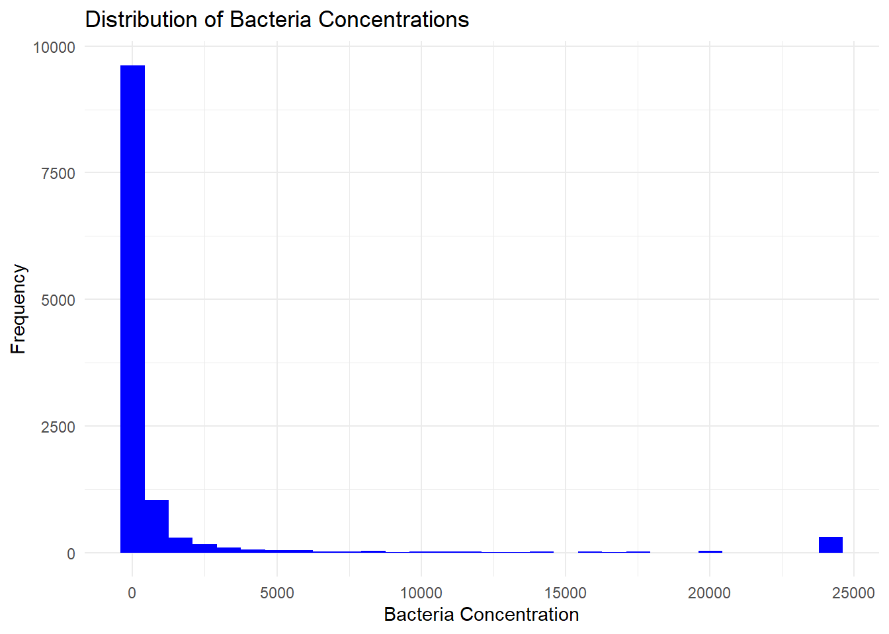
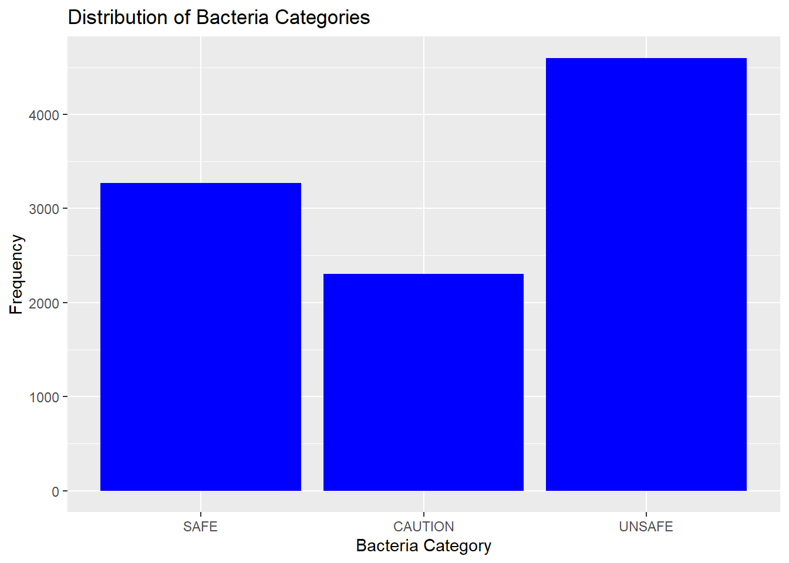
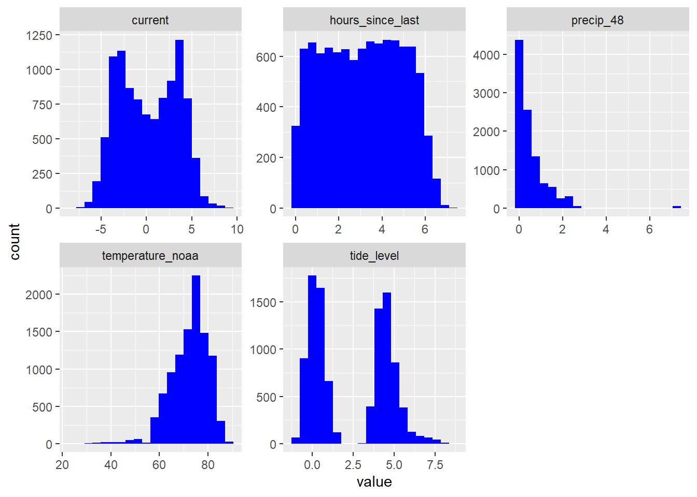
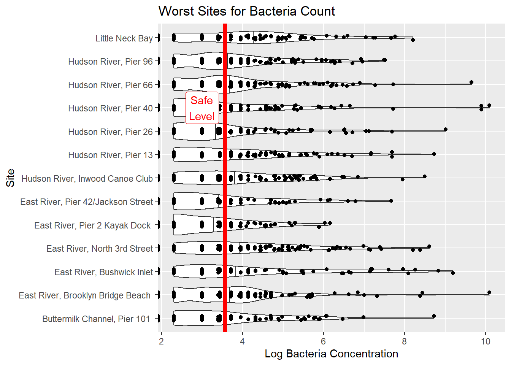
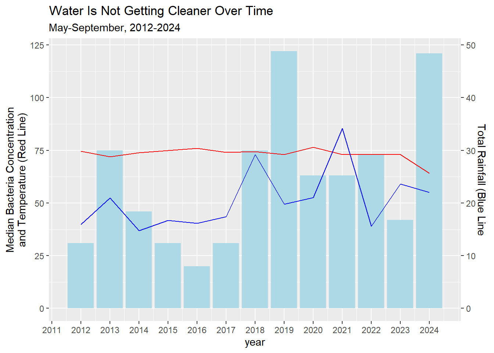
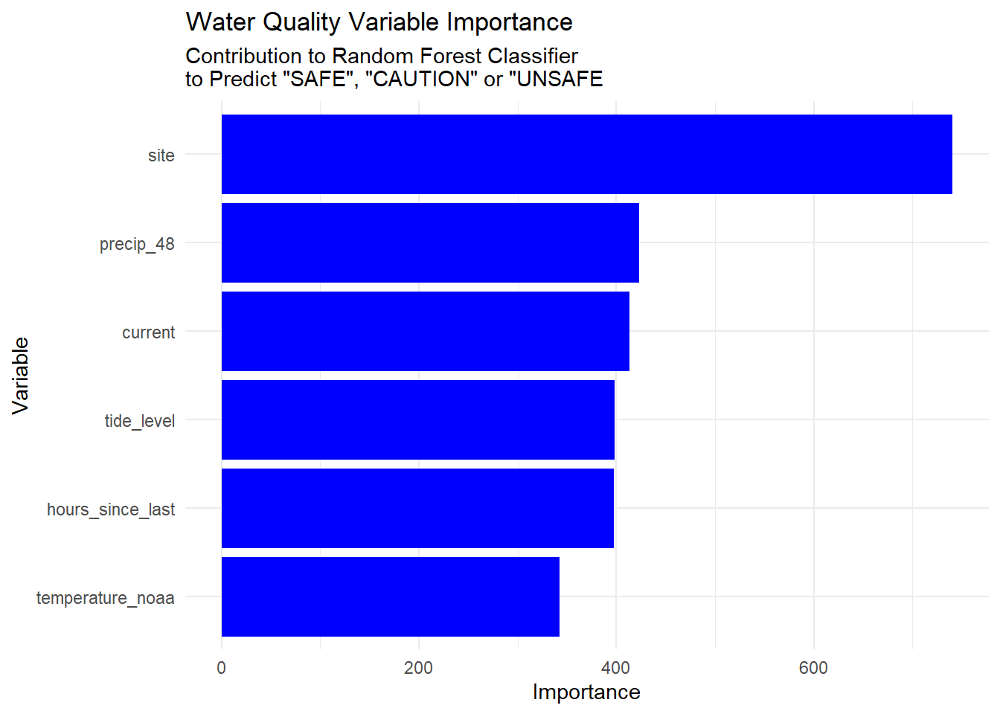
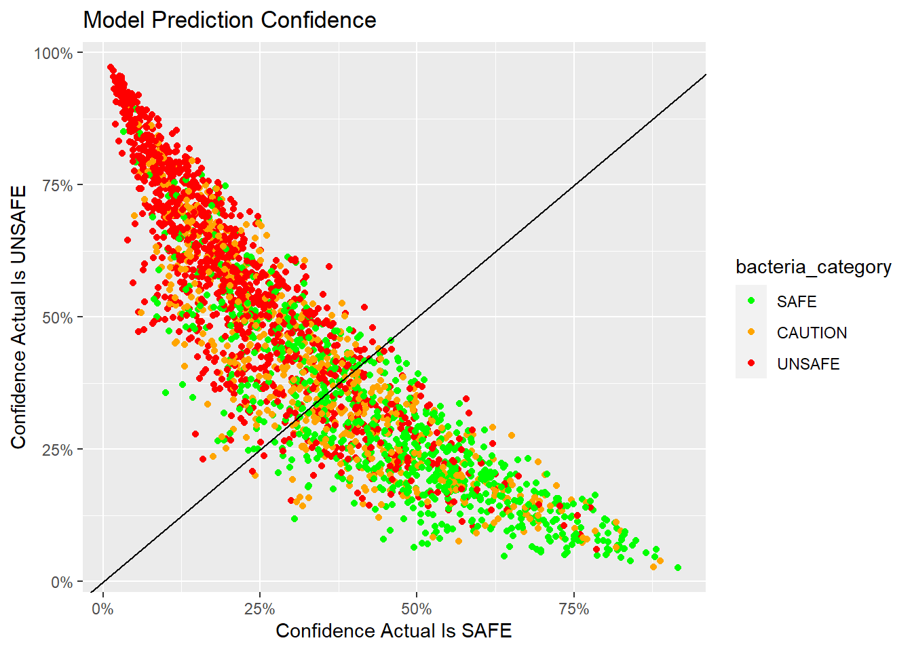

Exploring BOP WQ Data
Predicting Enterococci Levels in NYC Harbor
This document explores the relationship between weather, tides and water quality in the NYC Harbor. The data sources are the Billion Oyster Project (BOP), the Citizens’ Water Quality Testing Program and the NOAA.
This note is an update of a previous exploration of the data where I showed that a linear regression model was a very poor explainer of bacteria levels in New York Harbor water. In this note I set a lower bar by classifying bacteria into just three classes, “safe,” (<=35 colonies) “caution” (<= 104 colonies) and “unsafe” (> 104 colonies). I train a “random forest” machine learning model on a subsample of the data and then evaluate the model with a different test set of data.
In summary, this model works very well in fitting the training set but does much worse out of sample. The model does show good accuracy in predicting “safe” and “unsafe” water but very little accuracy in predicting bacteria levels in the “caution” range. The dominant predictor is the testing site, since several sites NEVER have “safe” water in the data set. No other variable stands out in significance.
This is not an academic-quality study. It is an exploration of the data. I am not a water quality expert or a professional statistician. Comments and criticism are welcome.
Data
The main data source is the BOP water quality spreadsheet found here: BOP Water Quality Data I also used the NOAA data site for tide, temperature and rainfall data.
Feature Engineering
The BOP data includes time of last high tide. I thought I could get more granular by imputing the direction and strength of the tidal current at the time of the water sample. I used the NOAA tide data to find the previous slack tide time and level, then the next slack tide time and level.By determining where in the tide phase the sample was taken and the total change in water level for that phase, I impute the direction and strength of the tidal current when the sample was taken using this formula:
\[ CurrentSpeed = HighLowRangeFt * sin(\pi * \frac{HoursSinceLastTide}{TideDurationHrs}) \]
So the further we are from a slack tide, high or low, the faster the current will be. The bigger the change in water level during a tidal phase, the stronger the current will be. Ebb tides are negative values, flood tides are positive. CurrentSpeed is an index so the units don’t have a specific meaning like feet-per-second.
I get the tides from the closest NOAA tide station to each water sampling site. Where the location of the sampling site is not known, I default to the Battery tide station at the bottom of Manhattan. This occurs when the name of the sampling site does not agree with any site name in the location meta data. There are significant number of such cases.
The city of New York uses 48-hour rainfall amounts in its safety criteria so that is what I use as the precipitation variable.
The BOP data does not include temperature. I used the NOAA Central Park temperature for each sample day as a data feature. This is a (not very good) proxy for the water temperature but also for seasonality. This allows seasonality to be a continuous variable. Otherwise, “month” would be a categorical variable.
In the end I chose to the following features: Site, TideHighLowRange, HoursSinceLastTide, CurrentSpeed, 48-HourPrecip and Temperature.
Data Exploration
The bacteria levels are distributed in a lopsided way. The extreme high level is effectively infinity and conveys little information. Values above 5000 are only 5% of the observations and values below 500 are 82% of the observations.
If we group the bacteria levels according to the official quality standards we get a better behaved distribution.

What are the distributions of all the variables? Note the tide level distribution are the levels at just the high and low tides.

What are the cleanest and most contaminated sites?


What is obvious is that even the cleanest sites have a lot of variation in bacteria levels. This might give us some hope that environmental factors might be more important than location in predicting bacteria levels.
Now let’s look at some trends over time. Sadly, the overall level of bacteria has not improved over time. Looking at temperature, there are no clear trends. There are a couple years where a lot of rainfall seems associated with more bacteria but other years contradict that.

Modeling
To use the random forest model we split the data randomly into a training set and a test set. 75% is used for training and the rest we hold out for testing. The sets are stratified so the same proportion of each bacteria category is in each set. The model is tuned using cross-validation on the training set. The model is then evaluated on the test set.
Results
The simplest way to evaluate the model is to look at the confusion matrix. This is a table that shows the number of correct and incorrect predictions for each category. In a perfect model the diagonal would be all the observations and the off-diagonal counts would all be zero. The table below shows that out of 818 “SAFE” observations, the model predicted 492, or 60% (492/818), correctly. On the other hand, in 7% of all the cases, the model predicted the water was “SAFE” when the actual was “UNSAFE” (176/2544) The model is far better at predicting “SAFE” and “UNSAFE” than “CAUTION.”
| Truth Table | ||||
|---|---|---|---|---|
| Truth | Prediction | |||
| SAFE | CAUTION | UNSAFE | Total | |
| SAFE | 492 | 76 | 250 | 818 |
| CAUTION | 225 | 63 | 288 | 576 |
| UNSAFE | 176 | 71 | 903 | 1,150 |
| Total | 893 | 210 | 1441 | 2544 |

The “Receiver Operator Curve” visualizes how much better than model is than random chance. Curves that bend up and to the left are better. Overall the “Kappa” statistic of the model is about 30 percentage points better than random chance, but as we see the model is barely better than random chance in predicting “CAUTION” levels of bacteria.


Conclusion
As I mentioned above, understanding point sources of pollution around each site might be more fruitful.